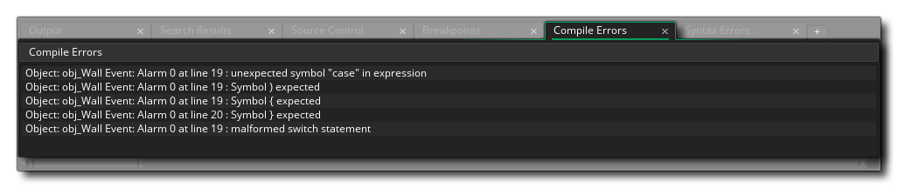

创建游戏时，一个常见错误是忘记定义变量，或者将变量错误定义（例如将字符串变量定义为实数变量等等……）此类错误在编译或运行时会被 GameMaker Studio 2 捕获，捕获时，会弹出错误提示窗，提示窗中显示了错误内容，以及错误的位置。这些信息也会被显示在 编译错误输出停靠栏, 如图: 
点击弹窗中的任意条目将打开该错误对应的物体或脚本，你可以根据错误提示定位错误在物体或脚本的位置。有时候错误提示含义不清，下方展示了全部的错误提示以及对该错误的解释，你可以根据下表来查找错误提示的意思：
No program to compile → 先前的编译错误导致编译器解析树无法创建，因此编译器没有要编译的程序数据 Fatal Error while compiling [name] - bailing details below → 此信息表示编译器发现了错误，但是无法定位错误原因或位置。（如果经常发生此情况你可联系 YoYo Games Support 并提供编译器输出窗口的详细信息） Recursive macro expansion is not supported → 你使用了相互引用并不断扩展的递归宏 Unable to find TextureGroup [group] → 通常只有在尝试运行格式错误的项目文件时才会发现此错误（如果经常发生此情况你可联系 YoYo Games Support 并提供编译器输出窗口的详细信息） Wrong to convert [value] to number → 你尝试将给定值转换（例如说将一个字符串转换为一个数字） Division by 0 → 除数不能为0 Invalid object id [object ID] used → 你尝试使用不正确的 ID 值访问物体（更多有关物体 ID 的信息请查看 这里） Unclosed comment (/*) at tend of script → 你使用 /* [comment] */ 创建了一个脚本注释，但是没有提供结束标记（更多相关信息请参阅 这里） Invalid token → 你的游戏代码中有一个无效字符，这可能发生在外语字符或 Unicode 中 Number [num] in incorrect format → （在错误中）给定的数字不是正在执行的函数或操作的正确格式，例如，当需要指针时，提供一个整型变量（更多相关信息请参阅 数据类型 ） Unexpected EOF encountered → 在使用 文件函数 时，意外地到达了文件的末尾
Unable to Not a string → 你尝试在字符串上使用 “!”（非）操作符（更多相关信息请参阅 这里） Unable to Negate a string → 你尝试为字符串取反，例如 “string = -string”（更多相关信息请参阅 这里）
Wrong number of arguments for function [function] → 对于给定的函数，你提供了过多或过少的参数 Failed to parse action_execute_script() - incorrect number of arguments received → 动作 执行脚本 有过多或过少的参数用于调用给定的脚本 Function [function] expects n arguments, a provided → 函数的参数数量错误 Unknown function [function] check to see if script is empty → 调用了一个编译器无法识别的脚本（这个错误通常由空的脚本资源引用引发，因为编译器在编译时会删除这些资源） Assignment of an empty value (function does not return anything?) → 当脚本或函数没有返回任何东西时，你尝试从脚本或函数分配返回值 Unable to find function [function] → 你调用了未知函数 Calling a function that needs an instance and no instance is available → 调用的函数或脚本用于对实例执行操作，但在运行时不存在实例 Calling a function that needs an other and no other is available → 你已经在碰撞事件或 with 语句之外使用了关键字 other Argument naming error, n arguments but no reference found to a → 你已经为一个脚本提供了许多参数，但是没有在脚本中引用其中一个参数，例如，你的脚本接受三个参数，但是你只使用参数 [0] 和 [2]（关于脚本和参数的更多信息，请参阅 这里) Cannot compare arguments → 你尝试比较两种不同的参数类型，比如字符串和实数（有关脚本和参数的更多信息，请参阅 这里） Unknown function or script [functions/script] → 编译器不能识别被调用的函数或脚本 Cannot use resource name [resource] as it is not being exported → 你尝试访问一个尚未标记为正在编译的平台项目部分的资源 Cannot use function/script name for a variable, using [functions/script] → 你已经尝试使用函数名或脚本名作为变量，例如string = "Hello World" Cannot use an argument outside a script → 内置的 参数 变量只能在脚本中使用，但你尝试在其他地方使用它们（有关脚本和参数的更多信息，请参阅 这里） No references to argument[num] but references argument[num] → 你正在引用一个不存在的参数，但该引用可以映射到另一个参数（有关脚本和参数的更多信息，请参阅 这里） Incorrect number of arguments for accessor → 在使用访问器时，你提供了错误数量的参数（有关访问器的更多信息，请参阅这里） Wrong type of arguments for /
Wrong type of arguments for div
Wrong type of arguments for mod
Wrong type of arguments for +
Wrong type of arguments for -
Wrong type of arguments for &&
Wrong type of arguments for ||
Wrong type of arguments for ||
Wrong type of arguments for &
Wrong type of arguments for |
Wrong type of arguments for ^
Wrong type of arguments for <<
Wrong type of arguments for >>→ 你为算数表达式提供了错误的参数类型（有关表达式的更多信息，请参阅 这里）
Using uninitialised variable [var] → 你尝试在初始化命名变量之前使用它（有关变量的更多信息，请参阅 这里） Variable [var] is write-only → 你尝试修改无法无法修改的变量（有关变量的更多信息，请参阅 这里） Unable to find variable named [var] → 在当前编译中找不到指定的变量（有关变量的更多信息，请参阅 这里） Malformed variable reference → 你尝试以错误的方式引用变量（有关变量的更多信息，请参阅 这里） Trying to set a read only variable [var] → 你尝试设置一个只读变量（有关变量的更多信息，请参阅 这里） Cannot redeclare a built in variable → 你尝试使用与内置变量相同的名称声明一个局部变量（有关变量的更多信息，请参阅 这里） Cannot use resource name for a variable → 你使用了与资源树中的资源相同的名称作为本地变量（有关变量的更多信息，请参阅 这里） [Variable] is read-only → 你已经尝试使用标记为只读的变量（有关变量的更多信息，请参阅 这里）
Cannot set a constant [constant] to a value → 你尝试将常数设置为不同的值 Constant is invalid here → 你尝试在某些地方使用对正在运行的代码无效的常量 Cannot assign to [var] - it's a constant → 你已经尝试为命名的常量分配一个新值
Array index should not be negative → 你已经尝试使用负数组索引访问、创建或设置数组值（有关数组的更多信息，请参阅 这里） Only 1 or 2 dimensional arrays are supported → 你尝试创建一个具有高于二维空间的数组（GameMaker Studio 2 只有一维和二维数组——有关数组的更多信息请参阅 这里）
Malformed Conditional operator → 你使用了错误的条件（三元）运算符或 if 语句，而不是 [条件] ? [表达式 1] : [表达式 2]; 格式 （有关 if 和三元运算符的更多信息，请参阅 这里） If requires a then statement → 你已经编写了一个 if 语句和表达式来求值，但没有给出要运行的 then 部分（有关 if 的更多信息，请参阅 这里） malformed assignment statement → 在代码中，你使用的赋值运算符错误（有关赋值的更多信息，请参阅 这里） Malformed if statement
Malformed repeat statement
Malformed while statement
Malformed do statement
Malformed for statement
Malformed with statement
Malformed switch statement
Malformed break statement
Malformed continue statement
Malformed exit statement→ 给定语句的结构是不正确的。具体细节请参阅相关部分: GML概述 Malformed post inc or dec statement → 你尝试以一种非法的方式使用 [var]++ 或 [var]--（有关 ++ / -- 的更多信息，请参阅 这里） Malformed pre inc or dec statement → 你尝试以一种非法的方式使用 ++[var] 或 --[var]（有关 ++ / -- 的更多信息，请参阅 这里） Malformed global gml_pragma → 你在使用 gml_pragma 时创建了一个错误的全局字符串（有关 gml_pragma的详细信息，请参阅 这里） Malformed PNGCrush gml_pragma → 你在使用 gml_pragma 时为 PNGCrush 创建了一个错误的字符串命令（有关 gml_pragma 的更多信息，请参阅 这里） Malformed Texgroup.Scale gml_pragma → 你在使用 gml_pragma 时创建了一个错误的全局字符串（有关 gml_pragma 的详细信息，请参阅 这里）
Default cannot be used multiple times in a switch → 在 switch 语句中，你多次定义了 default:（有关 switch 的更多信息，请参阅 这里） Clause expression type mismatch (clause expressions should all be the same type) → 在你的 switch 语句中，你正在检查两种不同的常量 case 类型，例如一种情况下是字符串，另一种情况下是整数（有关 switch 的更多信息，请参阅 这里） Case argument should be a constant → 你尝试在你的 switch case 中使用一个计算结果不为常数的值（有关 switch 的更多信息，请参阅here） Statement in a switch MUST appear after case or default → 你向 switch 语句中 case: 或 default: 之外的地方添加了一条语句（有关switch 的更多信息，请参阅 这里） Duplicate case statement found / original here → 你在 switch 语句的两个不同位置使用了相同的 case 常量（请注意，“original here” 注释将位于另一行上，可以单击它来显示原始（异常的来源）的 case:，你可以在 这里 找到关于 switch 的更多信息）
No return value from expression (does expression have a return value?) → 当表达式不返回任何东西时，你尝试将表达式的返回值赋给变量（有关表达式的更多信息，请参阅 这里） Expecting expression after the '.' → 你错误地使用了点（“.”）符号，并且没有正确地添加表达式后文（有关表达式的更多信息，请参阅 这里） Unexpected symbol [symbol] in expression → 表达式使用的符号不是被接受的表达式符号集的一部分——有问题的符号将显示出来（有关表达式的更多信息，请参阅 这里）
Unknown Pre operator → 你尝试使用不允许的符号作为前操作符，例如 **[var] 或 >>[var] —— 只接受 ++ 和 --（有关 ++ / -- 的更多信息，请参阅 这里） Unknown Post operator → 你尝试使用不允许的符号作为后操作符，例如 [var]** 或 [var]>> —— 只接受 ++ 和 --（有关 ++ / -- 的更多信息，请参阅 这里 Unknown pragma [gml_pragma string] → 你使用了编译器不知道的 pragma 字符串（有关 gml_pragma 的更多信息请参阅 这里） Unknown unary operator → 你尝试使用未知符号作为一元运算符（可用符号请参阅 这里） Unknown binary operator → 你尝试使用未知符号作为二元运算符（可用符号请参阅 这里） Unknown operator [operator] → 你尝试使用未知符号作为操作符（该符号将显示在错误中，可用符号的列表请参阅 这里）
Break used without context → 你没有在 switch、loop 或任何其他允许的结构中使用 break（有关 break 的更多信息，请参阅 这里） Continue used without context → 你没有在正确的上下文中使用 continue(有关 continue 的更多信息，请参阅 这里） continue statement is not allowed at this point → 在不允许使用 continue 的代码中使用了 continue（有关 continue 的更多信息，请参阅 这里）
enum num is invalid → 枚举数对枚举无效（有关枚举的更多信息，请参阅 这里） malformed enum → 你没有正确地创建枚举（有关枚举的更多信息，请参阅 这里） enum [enum] has already been defined → 你尝试使用与前面定义的枚举相同的名称来定义枚举（有关枚举的更多信息，请参阅 这里） malformed enum entry → 枚举有一条无效条目（有关枚举的更多信息，请参阅 这里） enum expression must be an integer constant → 枚举条目不作为整数常量计算（有关枚举的更多信息，请参阅 这里） enum reference [key] does not exist in [enum] → 你尝试使用没有为枚举定义的键引用枚举条目（有关枚举的更多信息，请参阅 这里）
Symbol ( expected
Symbol ) expected
Symbol , or ) expected
Symbol { expected
Symbol } expected
Symbol , or } expected
Symbol : expected
Symbol ; expected
Symbol [ expected
symbol ] expected
Symbol , or ] expected→ 你在编写代码时没有使用必需的符号（更多信息请参阅 表达式 或 语言特性 部分） Expected id or string → 你在其中一个 层函数 中使用的值既不是层 ID，也不是层名称（字符串） keyword Until expected → 你创建了一个 do... until 循环，但没有提供 until 表达式(有关 do... until 的更多信息，请参阅 这里） Function name expected → 你在代码中应该使用函数的地方使用了函数名以外的东西（有关使用函数的更多信息，请参阅 这里） variable name expected → 你提供了一个不需要变量名（有关变量的更多信息，请参阅此处 这里） Assignment operator expected → 你创建了一个赋值，它需要一个操作符，但是没有提供操作符（有关赋值的更多信息，请参阅 这里）
Android ARM ToolChain directory [dir] does not exist → Android 首选项 中指定的 ARM toolchain 目录不正确，并且不存在。 Android MIPS ToolChain directory [dir] does not exist → Android 首选项 中指定的 MIPS toolchain 目录不正确，并且不存在。 Android x86 ToolChain directory [dir] does not exist → Android 首选项 中指定的 x86 toolchain 目录不正确，并且不存在。 Android NDK directory [dir] does not exist → Android 首选项 中指定的 Android NDK 目录不正确，并且不存在。